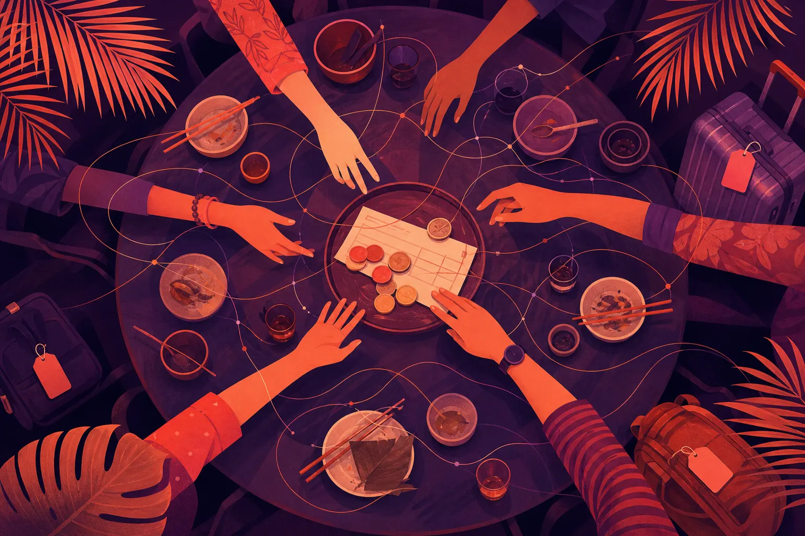

누가 낼까요? 동남아시아의 결제 규범과 집단 딜레마

동남아시아의 결제 규범은 금전적인 것만큼이나 사회적인 것입니다. 저녁값을 누가 낼지, 단체 여행 경비를 어떻게 나눌지, 어른을 대접할지는 모두 공정성과 체면, 넉넉함 사이의 균형 문제입니다. 핀테크, 여행, 식음료 브랜드는 누구도 인색해 보이지 않으면서 공정함을 쉽게 만드는 방식으로 이러한 딜레마를 위해 디자인할 때 이깁니다.
결제 규범은 왜 심리학의 주제일까요?
동남아시아의 대화를 리스닝하면, 사소해 보이지만 사실은 그렇지 않은 긴장의 한 갈래가 계속 등장합니다. 바로 사회적 딜레마입니다. 계산서를 정확히 나눌까, 반올림할까? 선배 동료가 계산하게 둘까? 빌라 비용 중 자기 몫을 늘 깜빡하고 송금하지 않는 친구는 어떻게 해야 할까? 이는 돈에 관한 질문이 아닙니다. 결제라는 순간에 싸인, 관계, 지위, 공정성에 관한 질문입니다.
브랜드는 바로 그 한가운데에 있습니다. 모든 결제 앱, 예약 플랫폼, 레스토랑은 공정하거나, 넉넉하거나, 어색해지는 것이 얼마나 쉬운지를 좌우합니다.
가장 자주 나타나는 딜레마는 무엇일까요?
- 정확한 분담 대 넉넉한 반올림: 공정성 대 쩨쩨해 보이는 것.
- 대접하기 대 대접받기: 연공서열, 나이, 감사가 누가 낼지를 정하며, 거절하면 체면을 잃게 할 수 있습니다.
- 단체 여행 장부: 여행 내내 공유되는 비용은 누가 누구에게 빚졌는지를 둘러싼 지속적인 긴장을 만듭니다.
- 돈 돌려받기: 돈을 돌려받고 싶은 마음 대 계산적으로 보이고 싶지 않은 마음.
- 축의금·세뱃돈 규범: 앙바오(ang bao), 두잇 라야(duit raya), 결혼 축의금에는 사람들이 조용히 이야기하는 금액에 대한 기대가 따릅니다.
핵심 용어
- 사회적 딜레마: 개인과 집단의 이익, 또는 두 가지 사회적 가치가 충돌하는 상황.
- 호혜성 규범: 베푼 호의가 시간이 지나면 되돌아올 것이라는 기대.
- 결제 마찰: 사람들 사이에서 돈을 정산하는 데 드는, 기술적인 것만이 아닌 사회적인 수고.
브랜드는 이러한 딜레마로 무엇을 할 수 있을까요?
품위 있는 공정함을 위해 디자인하십시오
공정한 선택지를 쉬운 선택지로 만드십시오. 탭 한 번으로 정산할 수 있고, 친구가 아니라 앱이 중립적인 리마인더를 보내 주는 그룹 정산 기능은 돈을 독촉하는 데 따르는 체면의 위험을 없애 줍니다. 조금 어색한 전달자 역할을 앱이 맡는 것입니다.
대접을 존중하십시오
모든 계산서를 나눠야 하는 것은 아닙니다. 계산서가 나오기 전에 테이블 비용을 조용히 결제하는 방법처럼, 누군가를 대접하는 일이 세심하게 느껴지도록 하는 기능과 메시지는 많은 사람이 소중히 여기는 규범을 존중합니다.
돈에 대해 친절하게 말하십시오
이는 정직에 담긴 문화적 뉘앙스에 관한 저희 글의 정직 대 배려의 긴장과 연결됩니다. “편하실 때 정산하세요”라는 카피가 “$42.50를 갚아야 합니다”보다 더 잘 받아들여집니다.
명절의 돈을 고려해 기획하십시오
축의금과 세뱃돈의 시즌에는 금액과 새 지폐를 둘러싼 고유한 불안이 따릅니다. 가이드라인이나 e-기프트 옵션 같은 실용적이고 비공개적인 도구가 이를 덜어 줄 수 있습니다. 더 넓은 코드는 명절 캘린더 가이드에서 다룹니다.
실제 사례: 단체 여행
다섯 친구가 방콕에서의 주말을 계획합니다. 한 명은 빌라를, 다른 한 명은 항공편을 예약하고, 세 번째 친구는 식사비 대부분을 냅니다. 일요일이 되자 장부는 뒤엉키고, 가장 많이 낸 친구는 돈 이야기를 꺼내기가 불편합니다. 이 긴장을 이해하는 여행 브랜드라면 예약 시점에 공동 여행 지갑을 제공하고, 자동 균등 분할, 누군가의 대접을 표시하는 옵션, 부드러운 여행 종료 요약을 함께 제공할 수 있습니다. 기술적으로 어려운 것은 하나도 없습니다. 진짜 문제가 관계에 있다는 것을 아는 것이 필요할 뿐입니다.
사회적 딜레마는 어떻게 리서치할까요?
설문조사에서 계산서를 공정하게 나누느냐고 물으면 사람들은 그렇다고 답합니다. 친구들과 그 이야기를 어떻게 나누는지 읽어 보면 딜레마가 생생하게 드러납니다. 농담, 앙금, 우회책이 모두 보입니다. Mindfuse는 SOMIN 관점 연구로 페르소나와 긴장 발견을 진행하며, 이 연구는 이러한 대화를 긴장과 모먼트로 클러스터링하고 각 발견을 그 근거와 연결합니다. SOMIN의 AI 마케팅 전략 사례는 인사이트가 어떻게 전략으로 옮겨지는지 보여 주고, Senoko Energy 케이스 스터디는 돈과 가정의 결정이 교차하는 카테고리에서의 오디언스 이해를 보여 주는 예입니다.
이러한 긴장이 “친구에게 돈 돌려 달라고 하는 법” 같은 검색 질문이 되면, 자매 브랜드인 SNMRush가 브랜드가 검색과 AI 어시스턴트에서 정말 유용한 답으로 노출되도록 돕습니다. 그리고 어떤 결제 기능 캠페인이 실제로 돈을 버는지 측정하고 계시다면, FMedia가 헤드라인 ROAS가 아니라 실질 이익을 살펴봅니다.
사회적 딜레마 체크리스트
- 제품이 누구도 쩨쩨해 보이지 않게 하면서 공정함을 쉽게 만듭니까?
- 친구들이 하지 않아도 되도록 브랜드가 어색한 전달자 역할을 할 수 있습니까?
- 해당하는 경우 대접과 연공서열의 규범을 존중합니까?
- 돈에 관한 표현이 명확할 뿐 아니라 친절합니까?
- 서비스하는 시장마다 규범이 다르다는 것을 확인했습니까?
어떤 카테고리가 가장 주의를 기울여야 할까요?
결제와 핀테크가 가장 분명하지만, 같은 딜레마가 단체 손님에게 계산서를 어떻게 내밀지 고민하는 레스토랑, 공동 예약을 다루는 여행 플랫폼, 요금을 나누는 차량 호출 앱, 심지어 축의금이 경험의 일부인 웨딩 서비스까지 좌우합니다. 고용주도 팀 점심이나 송별 선물을 처리하는 방식에서 이를 마주합니다. 각 경우에, 관계를 소중히 여기는 사람들 사이에서 돈이 오가는 곳이 어디인지, 그리고 무엇이 그 순간을 더 쉽게 만들지 물어보십시오. 답은 캠페인이 아니라 기본값, 중립적인 리마인더, 대접 옵션 같은 작은 디자인 선택인 경우가 많습니다. 제품이 규범을 존중하면 마케팅은 자연스럽게 따라옵니다. 사람들은 어색한 대화를 덜어 주는 도구를 추천하기 때문입니다.
저희의 관점
결제는 관계가 눈에 보이게 되는 곳입니다. 체면, 호혜성, 넉넉함이 깊이 중요한 동남아시아에서 정산이라는 작은 순간을 잡는 브랜드는 놀라울 만큼 큰 호의를 얻습니다. 거래만이 아니라 딜레마를 위해 디자인하십시오.
함께 쓰는 돈의 순간을 중심으로 제품이나 캠페인을 만들고 계십니까? ask@mindfuse.sg에서 긴장 연구를 시작하십시오.
자주 묻는 질문
계산서 나누기 규범은 동남아시아 안에서도 다릅니까?
그렇습니다. 연공서열, 나이, 상황, 관계가 모두 누가 낼지를 좌우하며, 규범은 시장과 커뮤니티마다 다릅니다. 하나의 지역 규범을 가정하지 말고 시장별로 리서치하십시오.
결제 앱은 사회적 딜레마에서 왜 중요합니까?
리마인드하거나 기록하는 어색한 역할을 맡아 친구들 사이의 체면 위험을 없애고 공정함을 더 쉽게 만들어 줄 수 있기 때문입니다.
호혜성 규범이란 무엇입니까?
베푼 호의가 시간이 지나면 되돌아올 것이라는 기대입니다. 사람들이 늘 정확히 나누기보다 번갈아 가며 대접하는 이유를 설명해 줍니다.
긴장 연구 시작하기
Mindfuse는 소비자 심리 및 문화 인사이트 컨설팅사입니다. 실제 대화에서 페르소나, 긴장, 문화 코드를 해독하고, 이를 팀이 실행할 수 있는 브리프로 바꿉니다.
ask@mindfuse.sg로 이메일 보내기 →